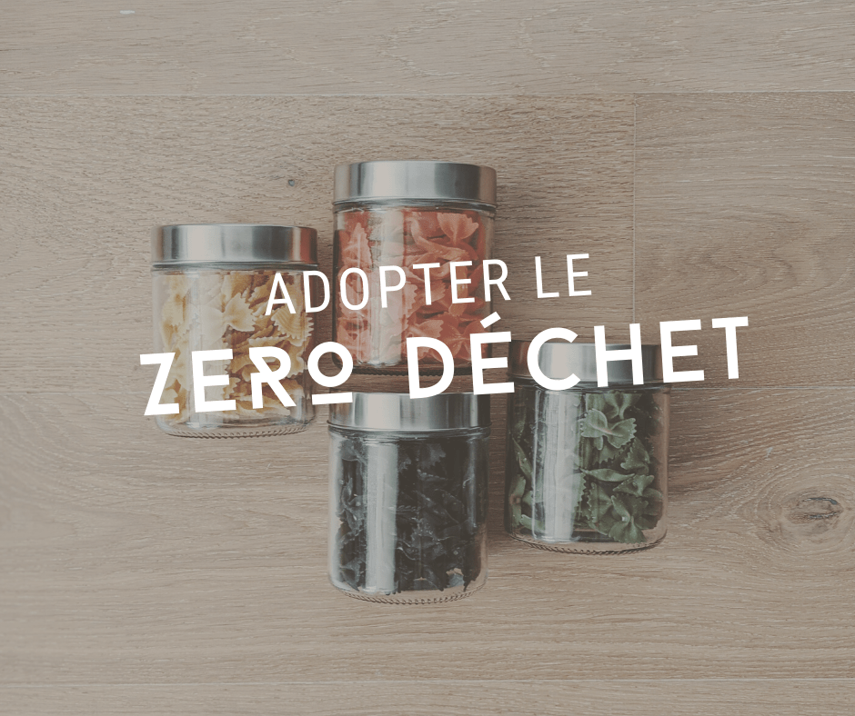
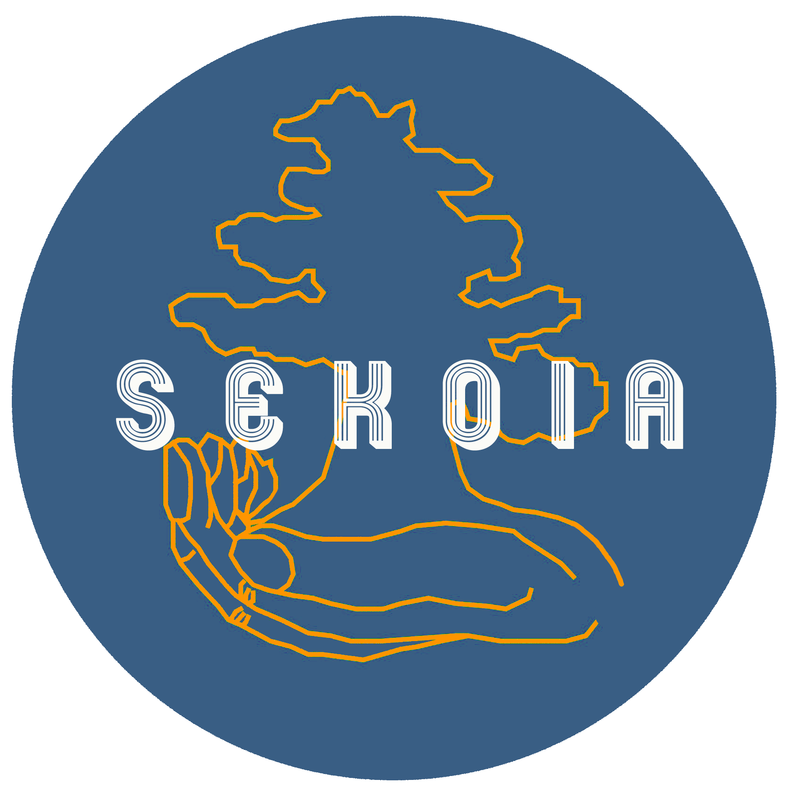

Je reprends la plume aujourd’hui pour mettre en lumière une cause importante dans notre vie quotidienne. Il n’y a pas que dans l’organisation de mariages qu’il faut faire des e
Je reprends la plume aujourd’hui pour mettre en lumière une cause importante dans notre vie quotidienne. Il n’y a pas que dans l’organisation de mariages qu’il faut faire des efforts ! Chaque jour, nous devons faire attention à nos comportements et nos actes qui peuvent chambouler tout un éco-système.
Connaissez-vous la démarche « Zéro déchet » ?
Le Zéro Déchet, c’est quoi ?
Un fait : la quantité de nos déchets a doublé en 40 ans. Alors il est temps de s’intéresser au zéro déchet qui est une façon de vivre et de consommer au quotidien… même si vivre en ne produisant vraiment aucun déchet est compliqué, vous pouvez au moins adopter des alternatives écologiques qui ne produiront aucun déchet non recyclabe.
Pour commencer, la reine du Zéro Déchet – Béa Johnson – a établi 5 règles, aussi appelées « les 5R » en anglais : Refuse, Reduce, Reuse, Recycle, Root. En français, on le traduit par « les 4R + C » :
- REFUSER ce dont nous n’avons pas besoin
- RÉDUIRE ce dont nous avons besoin
- RÉUTILISER ce que nous consommons (et que nous ne pouvons ni réduire ni refuser)
- RECYCLER ce que l’on ne peut ni refuser ni réutiliser
- COMPOSTER (ce qu’il reste)
Mettre en place le Zéro Déchet chez soi
Je vous conseille dans un premier temps de lire les nombreux blogs, les sites d’associations nationales ou locales et les livres qui en parlent. C’est une source d’informations riche et variée.
Pour ma part, j’ai commencé par les livres de Béa Johnson « Zéro Déchet » puis de la « Famille (presque) Zéro Déchet« . Ces deux ouvrages m’ont permis de définir les bases de la démarche de réduction des déchets. J’ai ensuite mis en place des nouvelles choses quand d’autres étaient déjà intégrées à notre quotidien depuis plusieurs années (coton démaquillant par exemple).
Je me suis ensuite intéressée aux associations qui œuvrent au niveau local, à d’Aix-en-Provence. Pour aller plus loin dans ma démarche, il me fallait trouver des commerces qui jouent le jeu, des nouvelles alternatives, etc.. C’est dans cette optique que j’ai découvert la page Facebook de « Zéro Déchet Pays d’Aix » qui est une antenne du réseau national « Zéro Waste France ».
Label Zéro Déchet de l’association Sekoia

Récemment, j’ai également découvert le travail de l’association « Sekoia » dont je trouve l’histoire très motivante ! Fondée en janvier 2019 par des étudiants de Science Po Aix, cette association environnementale est à l’initiative de la création d’un label écologique zéro déchet pour les commerçants qui remplissent les critères de notre charte mais aussi de la sensibilisation des consommateurs au zéro déchet. L’association a pour objectif de s’étendre à la région PACA.
Leur label s’adapte à 4 types de commerces :
- Les restaurants et les fast-food
- Les bars et les cafés
- Les magasins de prêt-à-porter
- Les boulangeries
La charte (consultable ici) récompense les commerces qui s’engagent dans une démarche zéro déchet grâce à 3 niveaux de couleurs différentes : le label « Racine », « Branche » et « Cime ». Tous les commerces récompensés par ce label sont à retrouver sur leur « Annuaire Vert« . Et surveillez les vitrines des commerces car des stickers y sont apposés selon le niveau d’implication du commerce.
Si vous avez Instagram, je vous conseille de vous abonner à leur compte pour suivre leurs actualités (ils font des ateliers zéro déchetet !) leurs campagnes.
Le Zéro Déchet chez My Green Event
Après tout ça, vous vous demandez peut-être ce que je mets en place pour réduire mes déchets et ceux de mon activité de wedding planner ?
- Favorisation du numérique au quotidien : signature électronique des contrats, pas ou peu d’impression et toujours sur du papier recyclé, recyclage du papier utilisé en brouillon, utilisation de papier ensemencé…
- Utilisation de contenants réutilisables pour le déjeuner des équipes sur place le Jour J
- Recyclage et compostage
Vous l’aurez compris, j’ai la chance d’avoir un métier de service – l’organisation – qui ne génère pas trop de déchets 🙂
Et chez vous, comment ça se passe ?